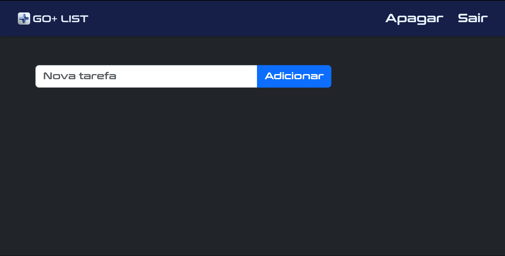
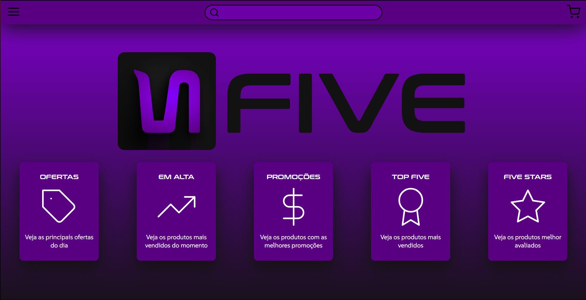
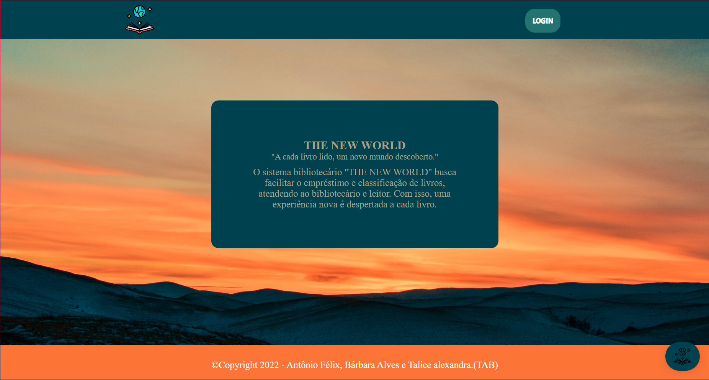
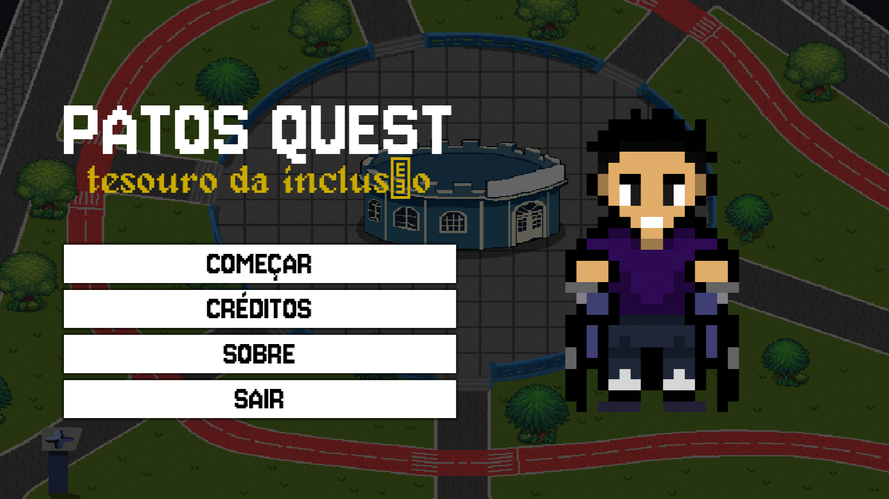
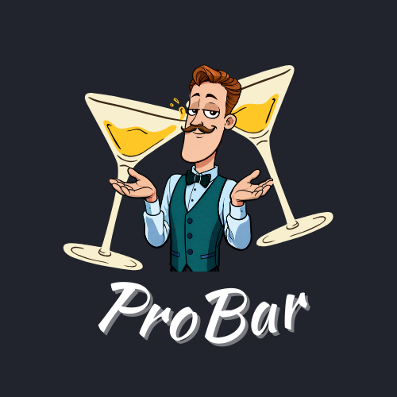
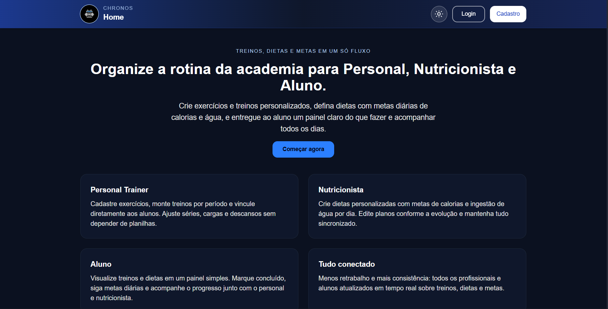

Graduado em Análise e Desenvolvimento de Sistemas
Desenvolvedor web especializado em criar experiências digitais incríveis com foco em soluções inovadoras. Usufruindo das habilidades individuais e coletivas para melhorar e otimizar ideias.
Seleção de trabalhos que demonstram minhas habilidades técnicas e criatividade

Projeto em grupo de um "To do list", lista de afazeres, utilizando o framework Django, praticando o CRUD.
Ver projeto
Esse projeto foi desenvolvido para adquirir conhecimento, para desenvolvimento de sites de compra. Logo, o projeto é um e-commerce destinado a venda de produtos digitais (com possibilidade de venda de produtos físicos) com plano de afiliação. (Focado no front-end)
Ver projeto
Esse projeto foi desenvolvido para adquirir conhecimento, nos quesitos trabalho em equipe, cooperatividade, dentre outros. No qual o sistema bibliotecário "THE NEW WORLD" busca facilitar o empréstimo e classificação de livros, atendendo ao bibliotecário e leitor. Com isso, uma experiência nova é despertada a cada livro.
Ver projeto
Jogo criado para incentivar a inclusão, pensado para o ambito educacional, logo se caracteriza como um RPG educacional que combina aventura, acessibilidade e representatividade em uma jornada emocionante pela cidade de Patos. Que está sendo produzido na matéria de extensão do curso de Análise e Desenvolvimento de Sistemas, na UNIFIP, campus Patos, por um grupo de alunos, no qual, também estou envolvido.
Ver projeto
[Descreva o objetivo do projeto, para quem ele serve e o que você praticou ou aprendeu nele.]
Ver projeto
Aplicação desenvolvida para organizar a rotina da academia, integrando Personal Trainer, Nutricionista e Aluno. Permite a criação de treinos personalizados, definição de dietas com metas diárias de calorias e consumo de água, além de oferecer ao aluno um painel simples para acompanhamento diário de atividades e progresso.
Ver projetoTecnologias e ferramentas que utilizo para criar soluções web modernas
Competências comportamentais que complementam minha expertise técnica
Clara e objetiva, facilitando colaboração em equipe
Experiência em projetos colaborativos e metodologias ágeis
Busco constantemente aprender e melhorar processos
Abordagem analítica para encontrar soluções eficientes